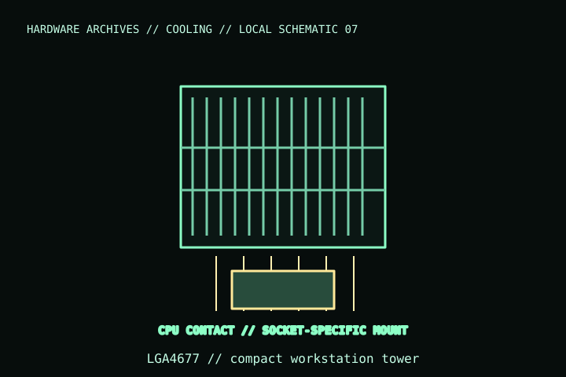

[ INDIVIDUAL COMPONENT // COOLING ]
Noctua NH-U9 DX-4677
A compact workstation/server tower cooler for Intel LGA4677, supplied with two 92 mm NF-A9 HS-PWM fans. It is a socket-specific cooler, not a general LGA1700/AM5 desktop model.

IDENTIFICATION: Match the complete model name, suffix, article number, bundle, revision, and host manual to the physical label before installation. Similar product names and variants may use different wiring or dimensions.
Specifications
| Catalog subcategory | Air CPU coolers / workstation and server air coolers |
|---|---|
| Exact model | Noctua NH-U9 DX-4677 |
| Heatsink / overall size | Dual-fan configuration; 125 × 95 × 112 mm stated overall dimensions (check orientation in the installation manual) |
| Included fans | 2 × NF-A9 HS-PWM; 92 mm, 4-pin PWM |
| Mounting / host | Intel LGA4677 only; verify the exact Xeon W platform, socket position, and board/chassis compatibility. |
| Clearance | 112 mm cooler height; check VRM heatsinks, memory, PCIe placement, and airflow path in dense workstation chassis. |
Compatibility, installation & service
- Use only on an LGA4677 board with the matching included mounting hardware; it is not a universal Xeon or desktop-socket heatsink.
- Confirm LGA4677 package/platform support and board-specific clearances; chassis airflow and nearby VRM components can constrain orientation.
- Connect the two PWM fans through the included control arrangement and respect the board header’s electrical limit.
Service notes
Keep the dual fans stopped while cleaning. For cooler removal, follow the LGA4677-specific manual and renew thermal compound; inspect the mounting hardware and socket area before reinstalling.
Manufacturer references
- Noctua — NH-U9 DX-4677Manufacturer product page for the workstation socket-specific model.
- Noctua — Compatibility centreManufacturer platform and compatibility lookup.
Verify fit, wiring, and ratings against the manufacturer document for the exact unit and host. This catalog record is an identification aid, not a compatibility guarantee.